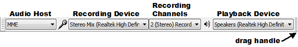
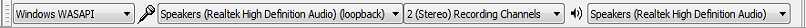

Tutorial - Recording Computer Playback on Windows
- Software playthrough (e.g. a stereo-mix option on Windows 'Sound control panel') - If available, this is usually best. The computer generated audio is mixed digitally with the other recorded audio with no loss of quality.
- Hardware playthrough (e.g. using a loopback cable) - The computer generated audio is converted to analog, mixed with any incoming audio, and converted back to digital again.
- Overdub - This option in Audacity is for a different purpose. It allows you to listen to other audio that you have already in Audacity as you record new audio. For example you could listen to vocals on your headphones as you record a backing track. There is no need to record these other tracks, because they are already in Audacity and available for mixing.
|
Choosing the recording device in Audacity
In Device Toolbar (pictured below) or in Devices Preferences, choose "MME" or "Windows DirectSound" in the Audio Host box. In the Recording Device box, look if there is an input meant for recording computer playback. This input could be called "Stereo Mix", "Wave Out", "Sum", "What U Hear", "Loopback" or other names, depending on your sound device.
- 
If you do not see Stereo Mix or similar:
- Make sure you have the latest correct audio drivers meant for your version of Windows
- Go to the Windows Control Panel to see if stereo mix can be enabled
- On Windows, choose the Windows WASAPI loopback recording method instead.
Choose the Windows WASAPI host (next section) if you want to record playback of a USB, wireless or external sound device.
Windows WASAPI loopback recording
On Windows, you can choose the Windows WASAPI Audio Host and then the "(loopback)" input in the Recording Device box. Choose the loopback input for the computer playback device you will be listening to (for example, "Speakers (loopback)" ). The loopback input records computer playback even if your sound device lacks its own stereo mix or similar input:
- 
WASAPI loopback has an advantage over stereo mix or similar inputs provided by the audio interface that the capture is entirely digital (rather than converting to analog for playback, then back to digital when Audacity receives it). System sounds playing through the device selected for WASAPI loopback are still captured.
Playback and Recording sliders
The behavior of the Audacity playback and recording sliders may vary according to the sound device you are recording from.
- On some devices the Mixer Toolbar recording volume slider will be grayed out when selecting the Windows WASAPI host, and even if not grayed out, the device may not support Audacity or the system input slider adjusting its volume. To control the recording level on those systems, you can try adjusting the playback level of the audio. This is best done in the application that is playing the audio, for example the video or audio player on the website you are recording from. If this does not work then Audacity will record at a fixed, safe level irrespective of the playback level of the audio.
- On many other devices, the Audacity recording volume and playback volume sliders will be "linked" so that both sliders move when you move either slider, and either slider will affect the level of the audio that you hear. This will often happen if in Audacity you set the (loopback) recording device to the same built-in device as the one selected for playback.
- When the Audacity recording and playback sliders are linked, adjusting either slider will often not affect the level already being recorded. This means that if you do not want to hear what you are recording, you can simply turn down either Audacity volume slider. However on some devices, turning down either slider may turn down or silence the achieved recording level. If this happens then to make a recording without hearing it, you can try the following:
- Click the speaker by the system clock, click the "Mixer" link, then mute the "Device" slider at far left of the "Volume Mixer" window
- Plug in external speakers or headphones and turn those down
- Plug in any 1/8 inch (3.5 mm) minijack plug with no lead attached.
- You will normally need to start playing the stream (or to have previously played some other audio in the application you are using for playback) before pressing Record in Audacity.
- WASAPI loopback may not be able to record in mono on all devices. If mono recording produces an error, change Device Toolbar to "2 (Stereo) Recording Channels". You can convert a stereo recording to mono using .
If you do not see any input for recording computer playback, exit Audacity and continue reading below.
Windows Control Panel for sounds
Windows, computers almost always only have microphone inputs enabled by default. Earlier Windows systems may also need the input for recording computer playback to be made visible before Audacity can use it. To show or enable inputs, launch the sound device control panel from the Windows Control Panel or from the system tray (by the clock).
- Right-click over the by the system clock then choose the click on the tab.
- Right-click anywhere inside the empty, white, space and choose "Show disabled devices" then right-click again and choose "Show Disconnected Devices".
- Right-click specifically over the input device you want to record with (in this case "Stereo Mix" or whatever alternative you have), and if visible, choose "Enable".
- Sometimes it helps to right-click over the "stereo mix" or similar device again and choose "Set as Default Device".
For a more detailed walk-through of the above steps for Windows (or if that does not work for your version of Windows), see Windows: accessing the Windows Sound controls.
RealTek and other audio interface control panels
If you still have no stereo mix input in Windows, sometimes this input can be enabled in the audio interface's own control panel, especially with older RealTek devices. The audio interface's own control panel can be found in the Windows Control Panel. Hints for RealTek control panels:
- Some panels "select" an input by muting all but one, so in this case, mute everything except Stereo Mix
- If you do not see Stereo Mix, click the wrench or spanner icon and enable Stereo Mix in the dialog that appears
- In some panels the option to choose is "Enabled recording multi-streaming"
- You should now see a volume control for Stereo Mix; make sure it is selected or unmuted.
Updating sound device drivers
If there is still no suitable input, try updating the sound device drivers for your audio interface. This can sometimes produce an additional input for recording computer playback, and may fix other problems such as poor quality or skipping.
Loopback cable
An alternative method of recording audio playing on the computer is to buy a cable with 1/8 inch (3.5 mm) stereo connectors at each end. Suitable cables are available from almost any audio retailer. Connect one end of the cable to the computer's audio output (green) and the other end to the line-in input (blue). Then choose the line-in as input device in Audacity.
| Connecting to the microphone input (red) may produce mono sound or poor quality. |
Alternative applications for recording computer playback
You can use other applications to record computer playback that do not rely on the computer sound device having this ability. These applications will make an audio file which can then be imported into Audacity for editing.
All the options below grab the audio digitally from the application producing the sound. This has advantages over stereo mix recording. Lossy digital-analog-digital conversions are avoided and also unwanted system beeps and alerts are not captured.
- SoundLeech is a free application for Windows which runs from the system tray. It records to lossless WAV format only.
- VB-Audio Virtual Cable is a donation-ware application for Windows. You can set the Cable Input as default playback device then set Audacity to record from the Cable Output.
- TotalRecorder is a low cost recording package. Internet streams can optionally be captured at faster than real-time rates (monitoring is not available in that mode).
External audio interfaces
A further alternative is an external USB audio interface with a "Stereo Mix" type of option. An example known to work on all versions of Windows is "Trust Sound Expert External". Not all USB audio interfaces offer a Stereo Mix option, so read the specifications carefully before purchasing.